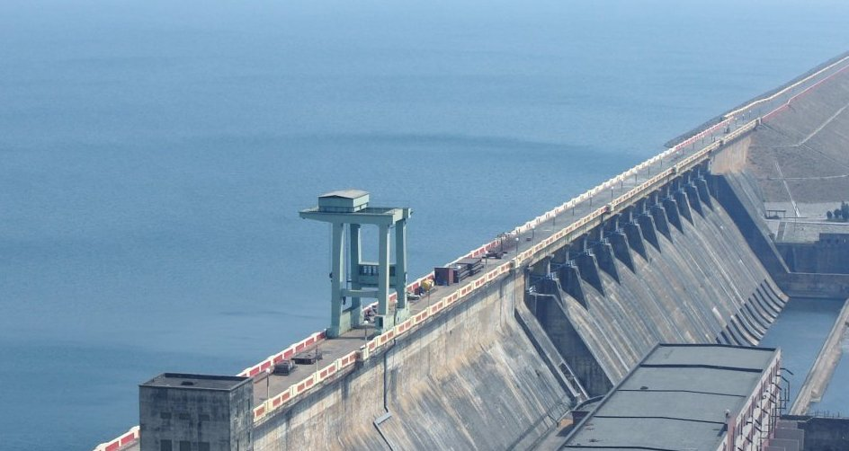
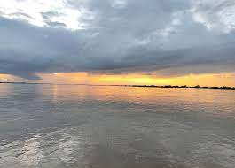

Hirakud Dam
Hirakud Dam is built across the Mahanadi River, about 15 kilometres (9 mi) from Sambalpur in the state of Odisha in India. It is the longest dam in the world. Behind the dam extends a lake, Hirakud Reservoir, 55 km (34 mi) long. It is one of the first major multipurpose river valley projects started after India's independence.

Contents
- Construction History
- Tecnical Details
- Structure
Construction History
After the devastating floods of 1936, Sir M. Visveswararya proposed a detailed investigation for storage reservoirs in the Mahanadi basin to tackle the problem of floods in the Mahanadi delta. In 1945, under the chairmanship of Dr. B. R. Ambedkar, the Member of Labour, was decided to invest in the potential benefits of regulating the Mahanadi for multi-purpose use. The Central Waterways, Irrigation and Navigation Commission took up the work.On 15 March 1946, Sir Hawthorne Lewis, the Governor of Odisha, laid the foundation stone of the Hirakud Dam. A project report was submitted to the government in June 1947. Pandit Jawaharlal Nehru laid the first batch of concrete on 12 April 1948.
In 1952, Mazumdar Committee was appointed by the government to oversee the soundness and technical feasibility of the project. The committee has envisaged costs of ₹ 92.80 crore for the project and that the construction of the main dam would be complete by June 1955. It also said that by 1954–55 a total of 1,347,000 acres (545,000 ha) would be irrigated and that 48,000 kW of electric power would be generated.[3] However, the dam was completed in 1953 and was formally inaugurated by Prime Minister Jawaharlal Nehru on 13 January 1957. The total cost of the project was ₹1,000.2 million (equivalent to ₹81 billion or US$1.1 billion in 2019) in 1957. Power generation along with agricultural irrigation started in 1956, achieving full potential in 1966.
Technical Details
| Information |
Details |
| 1.Total Length |
25.79 km (16.03 mi) |
| 2.Length of Main Dam |
4.8 km (3.0 mi) |
| 3.Artificial Lake |
743 km2 (287 sq mi) |
| 4.Irrigated Area (both crop) |
2,355 km2 (235,477 ha) |
| 5.Area lost in construction of Dam |
596 km2 (147,363 acres) |
Structure
The Hirakud Dam is a composite structure of earth, concrete and masonry. 10 km (6.2 mi) north of Sambalpur, it is the longest major earthen dam in India, measuring 25.8 km (16.0 mi) including dykes, and stands across the river spandan. The main dam has an overall length of 4.8 km (3.0 mi)spanning between two hills; the Laxmidungri on the left and the Chandili Dunguri on the right. The dam is flanked by 21 km (13 mi) of earthen dykes on both the left and right sides, closing the low saddles beyond the adjoining hills. The dam and dykes together measure 25.8 km (16.0 mi).[2] It also forms the biggest artificial lake in India,[dubious – discuss] with a reservoir holding 743 km2 (287 sq mi) at full capacity, with a shoreline of over 639 km (397 mi). There are two observation towers on the dam one at each side. One is "Gandhi Minar" and the other one is"Jawahar Minar". Both the observation towers present extensive views of the lake.
Power House
The dam supports two different hydroelectric power houses. Power House I is located at the base (toe) of the main dam section and contains 3 x 37.5 MW Kaplan turbine and 2 x 24 MW Francis turbine generators for an installed capacity of 259.5 MW. Power Station II is located 19 km (12 mi) southeast of the dam 21°21′10″N 83°55′00″E at Chipilima. It contains 3 x 24 MW generators. The entire installed capacity of the dam's power houses is 347.5 MW. Power House I and II were built in three stages. During stage I, four generators were installed at PH I and in stage II, the power channel two and Power House II was constructed. All three generators were installed at PH II along with two more at PH I by 1963. Between 1982 and 1990, the seventh and final generator was installed at PH I.
Mahanadi

Back to Top